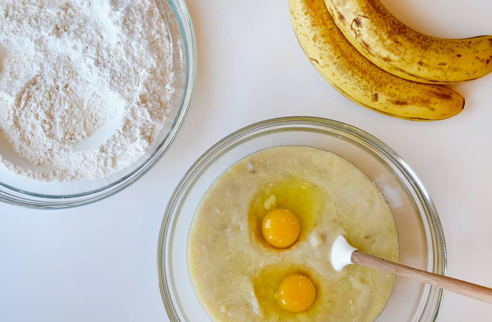

Cream Cheese Banana Bread
Credit to: Just a Taste

Description
This recipe is one that I have been dying to try! If you love banana bread like me, then
I'm sure you will love this sweet twist! This cream cheese banana bread
adds an extra level of sweetness and texture to your baking. This will come out super
moist and is perfect for a sweet treat late at night, possibly paired with a bowl of ice cream!
Ingredients
For the banana bread:
- 2 cups all-purpose flour
- 3/4 cup sugar
- 1/4 teaspooon salt
- 3/4 teaspoons baking soda
- 3 medium very ripe bananas, mashed well
- 2 large eggs
- 2 large eggs
- 1/4 cup buttermilk
- 6 Tablespoons unsalted butter, melted and cooled
- 2 teaspoons vanilla extract
For the cream cheese filling:
- 5 oz cream cheese, softened
- 1 large egg
- 1/4 cup sugar
- 2 Tablespoons all-purpose flour
Steps
Make the banana bread:
- Preheat the oven to 350°F. Line a 9x5-inch loaf pan with parchment paper so that it hangs over on the longer sides then grease the parchment paper with cooking spray.
- In a large bowl, whisk together the flour, sugar, salt and baking soda.
- In a separate medium bowl, whisk together the mashed bananas, eggs, buttermilk, melted butter and vanilla extract.
- Add the wet ingredients to the dry ingredients and mix just until combined. Set the batter aside.
Make the cream cheese filling:
- In a small bowl, whisk together the cream cheese, egg, sugar and flour. (Alternately, use a handheld beater to combine the ingredients.)
- Add ⅓ of the banana bread batter to the prepared loaf pan then alternately add dollops of the cream cheese filling and remaining banana bread batter to the pan. Using a knife, swirl together the mixture.
- Bake the bread for 50 to 60 minutes until the top is set. (If the bread is getting too dark around the edges, you can tent the pan with foil and continue baking.)
- Remove the bread from the oven and allow it to cool in the pan for 10 minutes before using the parchment paper overhangs to lift the bread out of the pan and onto a rack to cool completely. Slice and serve.